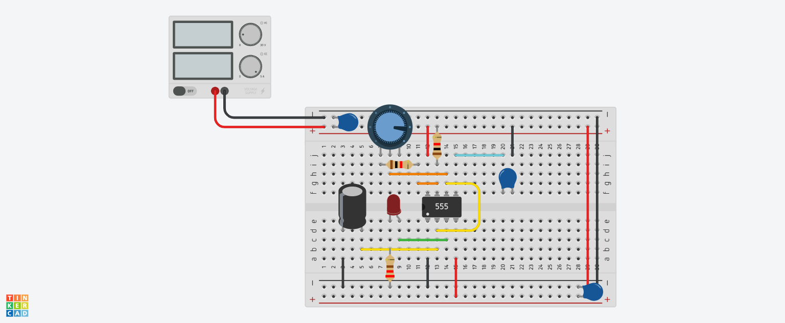

How the computer works
Every part of the computer connects to one shared 8-bit bus. On each tick of the clock, one module puts a number on the bus and another reads it.
Clock
The heartbeat. Every step happens on a clock pulse.
Registers
Hold numbers (A, B) and the current instruction.
ALU
Adds and subtracts the numbers in A and B.
RAM
16 bytes of memory for the program and data.
Program counter
Keeps track of which instruction comes next.
Control logic
Decides which module talks to the bus on each step.
Progress
| Module | Main chips | Status |
|---|---|---|
| 1. Clock | 555 timers, 74LS04/08/32 | ● In progress |
| 2. Registers | 74LS173, 74LS245 | Planned |
| 3. ALU | 74LS283, 74LS86 | Planned |
| 4. RAM | 74LS189, 74LS157 | Planned |
| 5. Program counter | 74LS161 | Planned |
| 6. Output display | 28C16 EEPROM, 7-segment | Planned |
| 7. Control logic | 28C16 EEPROM ×2 | Planned |
Module 1: The clock
The clock needs to do two things: run on its own at a speed you can adjust, and step once each time you press a button. Both use a 555 timer chip.
Part 1a: Astable 555 Done
The 555 switches its output on and off by itself, forever. A capacitor charges through two resistors until it reaches ⅔ of the supply voltage, then discharges until it falls to ⅓, over and over.

Parts: R1 = 1 kΩ, R2 = 100 kΩ, C = 1 µF
= 1.44 ÷ ((1 000 + 200 000) × 0.000001)
= 7.18 Hz
Part 1b: Adjustable speed Done
R2 becomes a 1 kΩ resistor plus a 1 MΩ knob. Turning the knob changes how long the capacitor takes to charge, which changes the speed. The extra 1 kΩ sets a safe top speed when the knob is at zero.

| Knob | R2 | Speed |
|---|---|---|
| Maximum | 1.001 MΩ | 0.72 Hz (slow, easy to watch) |
| Half | 501 kΩ | 1.44 Hz |
| 10 % | 101 kΩ | 7.1 Hz |
| Zero | 1 kΩ | 480 Hz (fast) |
Part 2: Single-step button Done
A push button's metal contacts bounce, so one press can look like several. The 555 in monostable mode fixes this: a press starts one clean pulse of fixed length, and bounces during that pulse are ignored.

Parts: R = 1 MΩ, C = 0.1 µF, 1 kΩ pull-up on the button
= 1.1 × 1 000 000 × 0.0000001
= 0.11 s
Part 3: Choosing auto or manual Done
Both circuits on one board. A toggle switch picks which one drives the clock: the free-running astable (red LED) or the step button (yellow LED). A third LED shows the selected clock.

Next: Bistable 555 and logic gates Next
The toggle switch bounces too, which can add stray clock pulses. The next step adds:
- A third 555 in bistable mode that latches the switch position, so bounces do nothing.
- Logic gates (74LS04, 74LS08, 74LS32) that pick the clock source and stop it on a
HLTinstruction.
PCB view
Board layouts read live from my Tinkercad Eagle exports (.brd). Copper pads, silkscreen outlines and the unrouted connections (airwires) between parts are drawn straight from the file. Hover a part to see its value.
Download this .brd file (opens in Autodesk Eagle or Fusion 360 Electronics)
555 calculator
Try your own resistor and capacitor values.